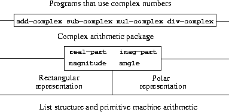

SICP 2.4 Множественные представления для абстрактных данных.


Упражнение 2.73
В секции 2.3.2 описана программа символического дифференцирования.
(define (deriv exp var)
(cond ((number? exp) 0)
((variable? exp) (if (same-variable? exp var) 1 0))
((sum? exp)
(make-sum (deriv (addend exp) var)
(deriv (augend exp) var)))
((product? exp)
(make-sum
(make-product (multiplier exp)
(deriv (multiplicand exp) var))
(make-product (deriv (multiplier exp) var)
(multiplicand exp))))
<more rules can be added here>
(else (error "unknown expression type -- DERIV" exp))))
Мы можем переписать программу что бы она выполняла дифференцирование по типу выражения. В данном случае "type tag" - символ алгебраической операции (к примеру +).
(define (deriv exp var)
(cond ((number? exp) 0)
((variable? exp) (if (same-variable? exp var) 1 0))
(else ((get 'deriv (operator exp)) (operands exp)
var))))
(define (operator exp) (car exp))
(define (operands exp) (cdr exp))
a. Объясните что сделано выше? Почему мы не можем применить number? и same-variable? в дата ориенторованный обработчик?
number? и same-variable? не содержат знака операции поэтому они не могут быть обработаны по типу операции.
b. напишите процедуру для взятия производной от суммы и произведения и вспомогательный код который помещает их в таблицу.
(define get 2d-get)
(define put 2d-put!)
(define (deriv exp var)
(cond ((number? exp) 0)
((variable? exp) (if (same-variable? exp var) 1 0))
(else ((get 'deriv (operator exp)) (operands exp)
var))))
(define (operator exp) (car exp))
(define (operands exp) (cdr exp))
;; для произведения
(define (install-deriv-mul-package)
;; internal procedures
(define (multiplier opds) (car opds))
(define (multiplicand opds) (cadr opds))
(define (make-sum a1 a2) (list '+ a1 a2))
(define (make-product m1 m2) (list '* m1 m2))
(define (deriv-mul operands var)
(make-sum
(make-product (multiplier operands)
(deriv (multiplicand operands) var))
(make-product (deriv (multiplier operands) var)
(multiplicand operands))))
;; interface to the rest of the system
(put 'deriv '* deriv-mul)
'done)
(install-deriv-mul-package)
;; для суммы
(define (install-deriv-sum-package)
;; internal procedures
(define (addend opds) (car opds))
(define (augend opds) (cadr opds))
(define (make-sum a1 a2) (list '+ a1 a2))
(define (deriv-sum opds var)
(make-sum (deriv (addend opds) var) (deriv (augend opds) var)))
;; interface to the rest of the system
(put 'deriv '+ deriv-sum)
'done)
(install-deriv-sum-package)
c. добавить правило диффиренцирования для экспоненты
;; для экспоненты
(define (install-deriv-exp-package)
;; internal procedures
(define (base opds) (car opds))
(define (exponent opds) (cadr opds))
(define (make-sum a1 a2) (list '+ a1 a2))
(define (make-product m1 m2) (list '* m1 m2))
(define (make-exponentiation b1 e2)
(cond ((=number? e2 0) 1)
((=number? e2 1) b1)
((=number? b1 0) 1)
((and (number? b1) (number? e2)) (expt b1 e2))
(else (list '** b1 e2))))
(define (deriv-exp opds var)
(make-product (make-product (exponent opds)
(make-exponentiation (base opds)
(make-sum (exponent opds) -1)))
(deriv (base opds) var)))
;; interface to the rest of the system
(put 'deriv '** deriv-exp)
'done)
(install-deriv-exp-package)
(deriv '(** (+ x 3) 5) 'x)
d. предположим мы индексируем процедуры другим способом, то есть в процедуре производной вызывается вот такой код
((get (operator exp) 'deriv) (operands exp) var)
Какие изменения необходимо сделать в остальной системе что бы код продолжал работать?
нам нужно изменить интерфейсную часть пакетов, то есть при выполнении put нужно поменять местами операнд и имя функции
(put '** 'deriv deriv-exp)
Упражнение 2.74
"Жадное Предприятие Inc." широко децентрализованная компания, которая имеет много подразделений. В каждом подразделении своя реализация хранения списка персонала. Нужно иметь возможность получать и искать сотрудников по всем подразделениям, определите общие методы.
a. Дайте определение общей процедуры get-record, которая получает информацию по конкретному сотруднику из файла списка сотрудников подразделения.
b. Дайте определение общей процедуры get-salary, которая получает зарплату сотрудника.
c. Сделайте общую процедуру find-employee-record которая ищет по имени по всем подразделениям.
(define (install-department-1-package)
(define TYPE 'department1)
(define allemployees (list '(Каблуков 100.0 "Достоевского 5, кв. 20" 1)
'(Коровин 70.0 "Луговая 2" 2)
'(Тихонов 75.0 "Лунина 13, кв. 156" 3)))
(define (last-name record)
(car record))
(define (salary record)
(cadr record))
(define (address record)
(caddr record))
(define (id record)
(cadddr record))
(define (get-record employee-id)
(define (iter-search pk records)
(if (null? records)
false
(if (= pk (id (car records)))
(car records)
(iter-search pk (cdr records)))))
(iter-search employee-id allemployees))
(define (search-by-name employee-name)
(define (iter-search name records)
(if (null? records)
false
(if (equal? name (last-name (car records)))
(car records)
(iter-search name (cdr records)))))
(iter-search employee-name allemployees))
;; interface
(define (tag x) (attach-tag TYPE x))
(put TYPE 'get-record
(lambda (x) (tag (get-record x))))
(put TYPE 'get-salary
(lambda (rec) (tag (salary rec))))
(put TYPE 'find-employee-record
(lambda (x) (tag (search-by-name x))))
TYPE)
(define dp1 (install-department-1-package))
(define (install-department-2-package)
(define TYPE 'department2)
(define allemployees (list (list 4 (list 'Щавелев 105.0 "Пушкина 5, кв. 20"))
(list 5 (list 'Коровин 71.0 "Пушкина 2"))
(list 6 (list 'Куравлев 74.0 "Лунина 13, кв. 156"))))
(define (last-name record)
(car (cadr record)))
(define (salary record)
(cadr (cadr record)))
(define (address record)
(caddr (cadr record)))
(define (id record)
(car record))
(define (get-record employee-id)
(define (iter-search pk records)
(if (null? records)
false
(if (= pk (id (car records)))
(car records)
(iter-search pk (cdr records)))))
(iter-search employee-id allemployees))
(define (search-by-name employee-name)
(define (iter-search name employees)
(if (null? employees)
false
(if (equal? name (last-name (car employees)))
(car employees)
(iter-search name (cdr employees)))))
(iter-search employee-name allemployees))
;; interface
(define (tag x) (attach-tag TYPE x))
(put TYPE 'get-record
(lambda (x) (tag (get-record x))))
(put TYPE 'get-salary
(lambda (rec) (tag (salary rec))))
(put TYPE 'find-employee-record
(lambda (x) (tag (search-by-name x))))
TYPE)
(define dp2 (install-department-2-package))
(define (get-record employee-id department-id)
((get department-id 'get-record) employee-id))
(define (apply-generic op . args)
(let ((type-tags (map type-tag args)))
(let ((proc (get (car type-tags) op)))
(if proc
(apply proc (map contents args))
(error
"No method for these types -- APPLY-GENERIC"
(list type-tags op))))))
(define (get-salary record)
(apply-generic 'get-salary record))
(define (find-employee-record employee-name deps)
(define (iter-department-search name deps res)
(when (not (null? deps))
(let ((record ((get (car deps) 'find-employee-record) name)))
(display record)
(if (eq? record false)
(iter-department-search name (cdr deps) res)
(iter-department-search name (cdr deps) (cons record res)))))
res)
(iter-department-search employee-name deps '()))
dp1
dp2
(equal? 'Li 'Li)
(get dp2 'find-employee-record)
((get dp2 'find-employee-record) 'Li)
(find-employee-record 'Коровин (list dp1 dp2))
d. Какие изменения нужно внести если в Жадное Предприятие Inc. добавится еще одна дочерняя.
При добавлении подразделения нужно будет задать уникальный TYPE и реализовать интерфейс.
(put TYPE 'get-record
(lambda (x) (tag (... x))))
(put TYPE 'get-salary
(lambda (rec) (tag (... rec))))
(put TYPE 'find-employee-record
(lambda (x) (tag (... x))))
Упражнение 2.75
Определите конструктор make-from-mag-ang в стиле получения сообщения (message-passing).
(define (make-from-real-imag x y)
(define (dispatch op)
(cond ((eq? op 'real-part) x)
((eq? op 'imag-part) y)
((eq? op 'magnitude)
(sqrt (+ (square x) (square y))))
((eq? op 'angle) (atan y x))
(else
(error "Unknown op -- MAKE-FROM-REAL-IMAG" op))))
dispatch)
(define (apply-generic op arg) (arg op))
(define (make-from-mag-ang m a)
(define (dispatch op)
(cond ((eq? op 'real-part) (* m (cos a)))
((eq? op 'imag-part) (* m (sin a)))
((eq? op 'magnitude) m)
((eq? op 'angle) a)
(else
(error "Unknown op -- MAKE-FROM-MAG-ANG" op))))
dispatch)
(define (real-part z) (apply-generic 'real-part z))
(define (imag-part z) (apply-generic 'imag-part z))
(define (magnitude z) (apply-generic 'magnitude z))
(define (angle z) (apply-generic 'angle z))
(real-part (make-from-real-imag 1 1))
Упражнение 2.76
При эволюционировании системы с общими процедурами, могут потребоваться новые типы данных или новые операции. Для каждой из трех стратегий
общие операции с явным выбором по типу дата ориентированный подход (через хеш таблицы) и подход получения сообщения (через dispatch в конструкторе)
опишите изменения которые должны быть внесены для нового типа или новой операции [3/3]
-
[X]при явном выборе метода по типу, нужно изменить все общие методы добавив туда дополнительные условия обработки нового типа. если добавляется метод, то нужно реализовать общий метод с выбором частного метода для каждого типа. -
[X]при использовании дата ориентированного подхода если добавляется новый метод, реализовать интерфейс для этого метода для каждого типа, если добавляется новый тип, нужно реализовать интерфейсные методы для данного типа. Важно что при этом не меняется старый код. -
[X]при использовании message-passing при добавлении метода, нужно изменить конструкторы всех типов, добавив туда обработку нового метода, если добавляется новый тип, достаточно описать новый конструктор. То есть при добавлении типа, старый код не меняется, но при добавлении метода, придется менять конструкторы в старом коде.